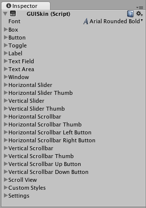

自定义
自定义 IMGUI 控件
虽然 Unity 的 IMGUI 系统主要用于创建开发者工具和调试界面，但仍可以通过多种方式进行自定义并设置样式。在 Unity 的 IMGUI 系统中，可微调控件的外观，为控件添加大量细节。控件外观由 GUIStyle 决定。默认情况下，如果创建控件时未定义 GUIStyle，则会应用 Unity 的默认 GUIStyle。此样式是 Unity 的内部样式，可在已发布的游戏中将此样式用于快速原型设计，或者如果选择不对控件进行样式设置，则会采用此样式。
当有大量不同的 GUIStyle 可供使用时，可在单个 GUISkin 中定义这些样式。GUISkin 只不过是 GUIStyle 的集合。
样式如何改变 GUI 控件的外观
GUIStyle 旨在模仿 Web 浏览器的层叠样式表 (CSS)。不过，许多不同的 CSS 方法经过了改编，包括对用于样式设置的各个状态属性进行划分，在内容和外观之间进行分离，等等。
控件定义内容，而样式定义外观。通过这种机制可以创建外观像普通__按钮 (Button)__ 但功能为__开关 (Toggle)__ 的组合控件。
皮肤和样式之间的区别
如前文所述，GUISkin 是 GUIStyle 的集合。样式定义了 GUI 控件的外观。如果要使用样式，则不必使用皮肤。

 Inspector 中显示的单个 GUISkin - 注意其包含多个 GUIStyle
使用样式
所有 GUI 控件函数都有可选的最后一个参数：用于显示控件的 GUIStyle。如果忽略此参数，则会使用 Unity 的默认 GUIStyle。函数内部会将控件类型的名称作为字符串应用，因此 GUI.Button() 使用“button”样式，__GUI.Toggle()__ 使用“toggle”样式，等等。若要覆盖控件的默认 GUIStyle，可将其指定为最后一个参数。
/* 将默认控件样式覆盖为 UnityGUI 默认样式中的其他样式 */
// JavaScript
function OnGUI () {
// 创建使用 "box" GUIStyle 的标签。
GUI.Label (Rect (0,0,200,100), "Hi - I'm a label looking like a box", "box");
// 创建使用 "toggle" GUIStyle 的按钮
GUI.Button (Rect (10,140,180,20), "This is a button", "toggle");
}
// C#
using UnityEngine;
using System.Collections;
public class GUITest : MonoBehaviour {
void OnGUI () {
// 创建使用 "box" GUIStyle 的标签。
GUI.Label (new Rect (0,0,200,100), "Hi - I'm a label looking like a box", "box");
// 创建使用 "toggle" GUIStyle 的按钮
GUI.Button (new Rect (10,140,180,20), "This is a button", "toggle");
}
}
创建公共变量 GUIStyle
声明 GUIStyle 公共变量时，样式的所有元素都将显示在 Inspector 中。在该面板中可以编辑所有不同的值。
/* 将默认控件样式覆盖为自定义的控件样式 */
// JavaScript
var customButton : GUIStyle;
function OnGUI () {
// 创建按钮。将上面定义的 GUIStyle 作为要使用的样式传入
GUI.Button (Rect (10,10,150,20), "I am a Custom Button", customButton);
}
// C#
using UnityEngine;
using System.Collections;
public class GUITest : MonoBehaviour {
public GUIStyle customButton;
void OnGUI () {
// 创建按钮。将上面定义的 GUIStyle 作为要使用的样式传入
GUI.Button (new Rect (10,10,150,20), "I am a Custom Button", customButton);
}
}
更改不同的样式元素
声明 GUIStyle 后，可在 Inspector 中修改该样式。可以定义大量状态，并应用于任何类型的控件。
必须先为控件状态分配 Background 颜色，然后再应用指定的 Text Color。
有关各个 GUIStyle 的更多信息，请阅读 GUIStyle 组件参考页面。
使用皮肤
对于较复杂的 GUI 系统，将一系列样式集中保存在一个位置是很有意义的。这就是 GUISkin 的作用。GUISkin 包含多种不同的样式，基本上能为所有 GUI 控件提供完整的外观修改。
创建新的 GUISkin
要创建 GUISkin，请从菜单栏中选择 Assets > Create > GUI Skin。随后将在 Project 文件夹中创建一个 GUI Skin。选择该 GUI Skin 即可在 Inspector 中查看其定义的所有 GUIStyle。
将皮肤应用于 GUI
要使用已创建的皮肤，请将其分配给 OnGUI() 函数中的 GUI.skin。
/* 创建一个属性来引用要使用的皮肤 */
// JavaScript
var mySkin : GUISkin;
function OnGUI () {
// 将该皮肤指定为当前使用的皮肤。
GUI.skin = mySkin;
// 创建按钮。此时将从分配给 mySkin 的皮肤获得默认的 "button" 样式。
GUI.Button (Rect (10,10,150,20), "Skinned Button");
}
// C#
using UnityEngine;
using System.Collections;
public class GUITest : MonoBehaviour {
public GUISkin mySkin;
void OnGUI () {
// 将该皮肤指定为当前使用的皮肤。
GUI.skin = mySkin;
// 创建按钮。此时将从分配给 mySkin 的皮肤获得默认的 "button" 样式。
GUI.Button (new Rect (10,10,150,20), "Skinned Button");
}
}
通过单个 OnGUI() 调用即可按需多次切换皮肤。
/* 在同一个 OnGUI() 调用切换皮肤的示例 */
// JavaScript
var mySkin : GUISkin;
var toggle = true;
function OnGUI () {
// 将该皮肤指定为当前使用的皮肤。
GUI.skin = mySkin;
// 创建开关。此时将从分配给 mySkin 的皮肤获得 "button" 样式。
toggle = GUI.Toggle (Rect (10,10,150,20), toggle, "Skinned Button", "button");
// 将当前皮肤指定为 Unity 的默认值。
GUI.skin = null;
// 创建按钮。此时将从内置皮肤获得默认的 "button" 样式。
GUI.Button (Rect (10,35,150,20), "Built-in Button");
}
// C#
using UnityEngine;
using System.Collections;
public class GUITest : MonoBehaviour {
public GUISkin mySkin;
private bool toggle = true;
void OnGUI () {
// 将该皮肤指定为当前使用的皮肤。
GUI.skin = mySkin;
// 创建开关。此时将从分配给 mySkin 的皮肤获得 "button" 样式。
toggle = GUI.Toggle (new Rect (10,10,150,20), toggle, "Skinned Button", "button");
// 将当前皮肤指定为 Unity 的默认值。
GUI.skin = null;
// 创建按钮。此时将从内置皮肤获得默认的 "button" 样式。
GUI.Button (new Rect (10,35,150,20), "Built-in Button");
}
}
更改 GUI 字体大小
此示例将展示如何通过代码来动态更改字体大小。
首先在 Unity 中创建一个新项目。然后创建一个名为 Fontsize.cs 的 C# 脚本，并将以下代码粘贴到其中：
// C# 示例
using UnityEngine;
using System.Collections;
public class Fontsize : MonoBehaviour
{
void OnGUI ()
{
//将 GUIStyle 样式设置为标签
GUIStyle style = GUI.skin.GetStyle ("label");
//将样式字体大小设置为随时间增大和减小
style.fontSize = (int)(20.0f + 10.0f * Mathf.Sin (Time.time));
//创建一个标签并使用当前设置来显示
GUI.Label (new Rect (10, 10, 200, 80), "Hello World!");
}
}
保存脚本并将其附加到空游戏对象，然后单击播放以查看字体的大小随时间循环增大和减小的行为。此时可能会注意到字体不能平滑地改变大小，这是因为字体大小不是无限数量的。
此特定示例要求加载默认字体 (Arial) 并将其标记为动态。无法更改未标记为动态的任何字体的大小。